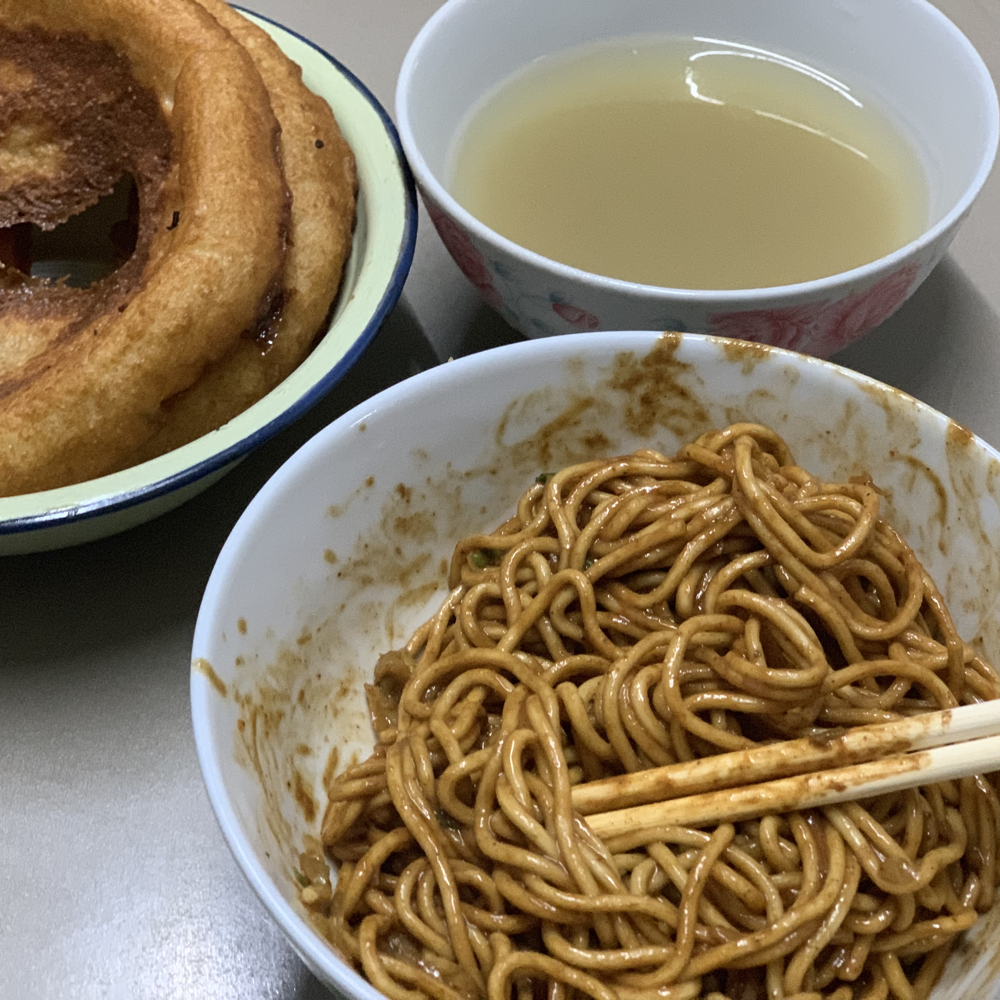
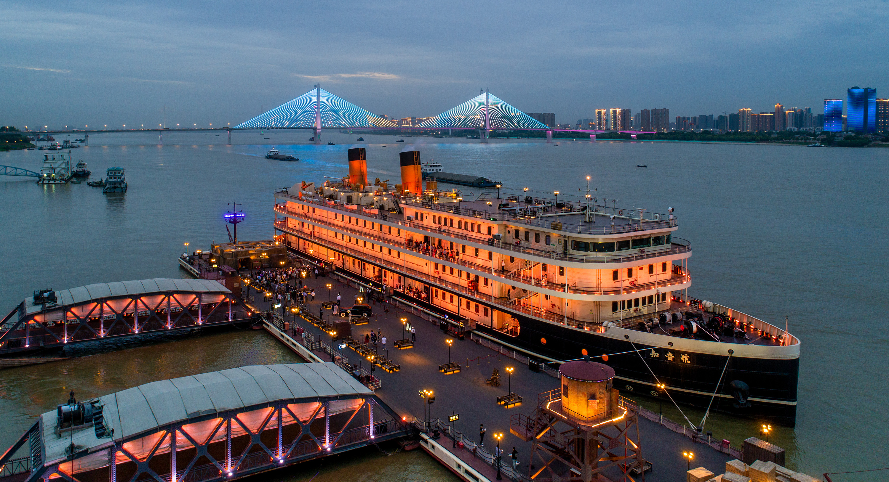
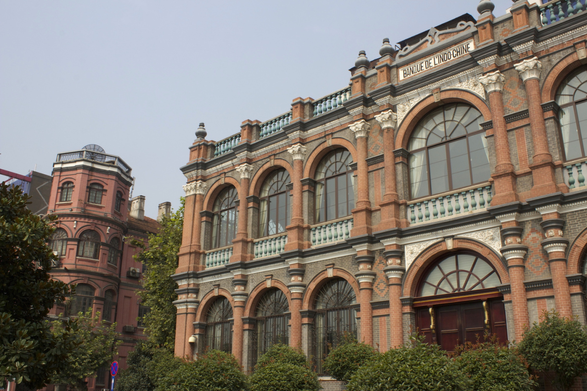
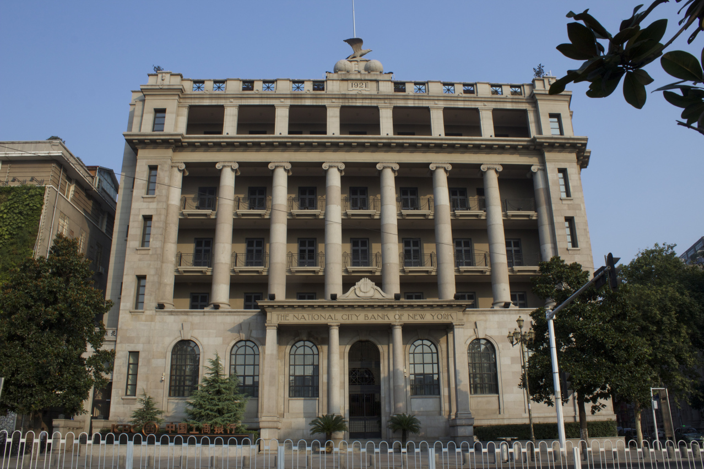

My hometown Wuhan is a city in central China.
It's a huge metropolis but not famous as Beijing or Shanghai.
The 1911 Wuchang Uprising is Wuhan's most remarkable event among Chinese history.
The uprising successfully overthrows China's five thousand years of the imperial rule system.
Since Wuhan is divided by rivers and lakes, there are many bridges in the city.
City Symbol: The first bridge ever built across the Yangtze
Traditional Breakfest, simple but delicious
Zhiyin(Friends) Cruise
Former American Consulate(1905)
Old Citibank Building(1921)
